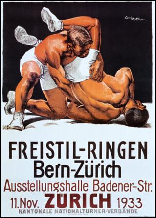

Problem C
Maximizing the ICPC
Input: Standard Input
Output: Standard Output
You are organizing a wrestling tournament. The tournament will be a playoff tournament, where 2N wrestlers meet in N rounds. In each round, the remaining wrestlers are paired up and pitted against each other. The winning wrestlers then proceed to the next round, and the losing wrestlers are out of the tournament. After the N:th round, one lucky champion remains.
Exactly who meets who in each round is decided randomly. Officially, that is. Unofficially, however, your number one priority is of course to make all the matches as entertaining as possible. You therefore try to make sure that the matches are scheduled in such a way that the least exciting match will be as exciting as possible.
To be able to quantify this, you have assigned an Index of Certainly Perceived Charm to each pair of wrestlers. The higher the ICPC, the more exciting you anticipate that a match between those two wrestlers will be.
Write a program to determine the ICPC of the least exciting match in the current round, provided we schedule the round in such a way so as to make this as large as possible.
The first line of input contains an integer T, giving the number of test cases. Each test case, giving a round to be scheduled, begins with an integer 1 ≤ N ≤ 6, indicating that there are W = 2N wrestlers in the round. Then follow W-1 lines of integers, the i:th of which contains W-i integers. The j:th integer on the i:th line gives the ICPC of wrestlers i and i+j. The ICPC:s are integers between 1 and 109, inclusive.
For each test case, output a line "Case X: Y", where X is the number of the test case (starting from 1), and Y is the ICPC of the least exciting match, provided an optimal schedule is used.
22100 100 100100 1001002300 300 300100 200100
|
Case 1: 100Case 2: 200
|